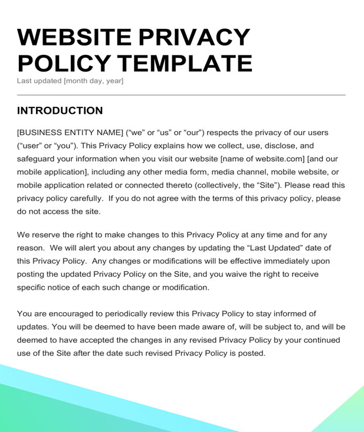

It is important to be able to tell if a website is secure - insecure websites can be used to steal information, send spam emails and even spread malware.
Nonetheless, here are a few key examples to look for in order to identify website security.
The 'S' in 'HTTPS' means that the website you are on is encrypted and has a 'SSL' certificate. (an SSL certificate is the security identifier and means your data will be protected if it travels to a server) Pictured right is an example of an unsecured website
Most legitimate websites will have the contact information of the company/business somewhere on their website, such as Email addresses, phone numbers ect, so checking if the contact details are legitimate is also a good sign that the website is secure.
Looking at the content of the website can also be a good way to decide if the website is legitimate or not, which in turn can expose how secure the website is. So when reading the content check for spelling and grammatical errors as most likely if there are a lot of errors within the content the website may not be legitimate.
Most browsers today have different measures which allow for checking how secure a website is. For example apples' browser safari offers a privacy report for different websites visited and allows you to see the report to see what has been stopped. Google chrome has a small lack in the URL bar when a website is secure and hovering above the icon will allow you to see if the certificates for the websites are up to date among other things.
Any legitimate website will have the websites privacy policy somewhere on the site. Reputable websites should have a privacy policy page, as it’s the law in many countries. So, take a few extra seconds to click around the site and see if you can find their privacy policy. If you cannot find a privacy policy it may be an indicator that the website isn’t secure
